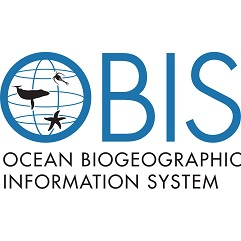

2nd Marine Biodiversity Workshop: from the Sea to the Cloud
April 2-5, 2019
1 Overview
1.2 Objectives
This second workshop seeks to continue the development of a community of practice dedicated to understanding change in marine biodiversity and generating knowledge and products that inform conservation and management strategies of marine living resources by engaging researchers, managers and policy-makers with interest in biodiversity monitoring and data synthesis and analysis. During this workshop participants will:
- Advance already agreed field sampling protocols for rocky shores and sandy beaches;
- Manipulate tabular and spatial data already collected at their study sites for standardized data formats using Darwin Core vocabularies and quality controls;
- Develop specific vocabularies for flora and fauna of rocky shore and sandy beach measured during field surveys;
- Publish survey datasets to the Ocean Biogeographic Information System (OBIS) using tools for sharing data;
- Advance knowledge on data science tools (R, Rmarkdown, Github) to mine data, visualize and analysis, and produce reproducible research documents with interactive visualizations onto the web.
Rocky shore near workshop venue
1.4 Organizers
- Marine Biodiversity Observation Network (MBON) Pole to Pole of the Americas - MBON Pole to Pole
- Instituto de Ciencias Marinas y Limnológicas, Universidad Nacional Autónoma de México (ICML - UNAM)
- AmeriGEOSS - Group on Earth Observations
- Ocean Biogeographic Information System (OBIS; IOC-UNESCO)
- Global Ocean Observing System (GOOS; IOC-UNESCO)
- Atlantic International Research Centre (AIR Centre)
1.5 Workshop rationale
The MBON Pole to Pole is organizing a second Marine Biodiversity Workshop - From the Sea to the Cloud - after a successful first workshop held during the 2018 AmeriGEOSS Week in Brazil. This activity advances the implementation of the MBON Pole to Pole network by enhancing knowledge on field data collection methods and use of informatic technologies for data management and analysis.
The MBON Pole to Pole aims to address the biodiversity priorities of various GEO initiatives, including Blue Planet and AmeriGEOSS, and coordinates with the Global Ocean Observing System (GOOS) of the Intergovernmental Oceanographic Commission of UNESCO and OBIS, and other national and international groups to serve the broadest possible community. This network will help nations and regions to improve conservation planning and environmental impact mitigation, serve the scientific community, and satisfy commitments to the Intergovernmental Science-Policy Platform on Biodiversity and Ecosystem Services (IPBES), Aichi Targets of the Convention of Biological Diversity (CBD), and the UN 2030 Agenda for Sustainable Development Goals (SDG’s).
The MBON Pole to Pole workshops:
- enhance coordination of data collection among nations;
- improve the collection of harmonized data, developing data standards and methodologies for data management and dissemination without compromising national concerns;
- support the integration of biodiversity information with physical and chemical data over time (status and trends); and
- generates products needed for informed policy and management of the ocean.
The workshop targets investigators and resource managers dedicated to studying and conserving biodiversity of invertebrates in two important coastal habitats: rocky shore intertidal zone and sandy beaches. This activity targets participants from all nations in the Americas, from pole to pole.
1.6 Instructors
- Enrique Montes (IMaRS; USF) - Project lead and workshop coordinator
- Patricia Miloslavich (GOOS Biology & Ecosystem Panel) - Protocols of the South American Research Group on Coastal Ecosystems (SARCE) and Essential Ocean/Biodiversity Variables (EOV/EBV) framework
- Maria Kavanaugh (OSU, USA) - Satellite biogeography (seascape maps)
- Eduardo Klein (OBIS) - Darwin Core (DwC), WoRMS species catalog for taxonomic quality control, and OBIS tools
- Ben Best (Ecoquants) - Data wrangling, visualization and analysis with R software, collaborative research platforms (Github, Git, RMarkdown)
- Jonathan Lefchek (MarineGEO - Smithsonian I.) - Data science tools for seagrass ecology and biodiversity
- Abigail Benson (OBIS-USA; USGS) - Darwin Core (DwC)**
- Sennai Habtes (UVI) - Statistical applications in coastal ecology and biodiversity assessments
- Frank Muller-Karger (IMaRS; USF) - Satellite remote sensing
- Gil Rilov (Israel Oceanographic and Limnological Research, Israel) - Ecology of the rocky shore intertidal zone
- Brian Helmuth (Northeastern University, USA) - Drivers of biodiversity variability and change in the rocky shore intertidal zone
- Rui Seabra (CIBIO - University of Porto) - Biomimetic sensor data for understanding environmental variability in rocky shores and impact on biodiversity
1.7 Required workshop materials
Participants must bring a laptop computer with the following programes installed (with latest version, as of 2018-03-20):
These are available for Windows, Mac or Linux operating systems.
Install additional packages by running the following line of code in your R terminal:
source("https://raw.githubusercontent.com/marinebon/p2p-brazil-workshop/master/scripts/install-R-packages.R")Full snorkeling gear

Rocky shore near workshop venue
1.8 Eligibility
The workshop will be limited to 20 participants. Selection of participants will be based on results from the Application Survey (below) and their ability and willingness to openly share data through OBIS, sustain a collaborative long-term monitoring program in their study area, share best practices and contribute to achieving the overall goals of the MBON Pole to Pole. Priority will be given to participants of the previous workshop that conducted biodiversity surveys at their study sites as agreed during this activity and that have submitted data sheets to the MBON Pole to Pole Github repository. Applicants willing to use and share their own data are also eligible if specific information about their dataset is provided, study site(s) location(s), time span of their dataset and methods employed.
1.9 Survey
In order to partcipate, you will need to complete the Application Survey below (be sure to scroll down within frame), or by visiting the survey directly at https://goo.gl/forms/e8luOKT4lOkeunQq1, before the survey deadline of December 31, 2018 at 11:59pm (EST).
1.10 Confirmation
The Application Survey will be closed December 31, 2018, at midnight (EST). Candidates will receive notice of acceptance by January 30th, 2019. Selected participants must confirm attendance to the workshop by replying to the acceptance notification email before February 15, 2019.
The workshop will provide partial or full travel support to a selected number of participants. Priority for travel suppor will be given to participants that completed biodiversity surveys before December 31, 2018 as agreed during the first MBON Pole to Pole workshop, or that are able to bring other biodiversity survey data to the workshop.
1.11 Resources
- Ocean Biogeographic Information System (OBIS) - Manual
- R for Data Science
- Spatial Data Analysis and Modeling with R
- Species Distribution Modeling with R
The project is supported by the National Aeronautics and Space Administration (NASA) grant 80NSSC18K0318, ” Laying the foundations of the Pole-to-Pole Marine Biodiversity Observation Network (MBON) of the Americas”, and co-sponsored by AmeriGEOSS.


